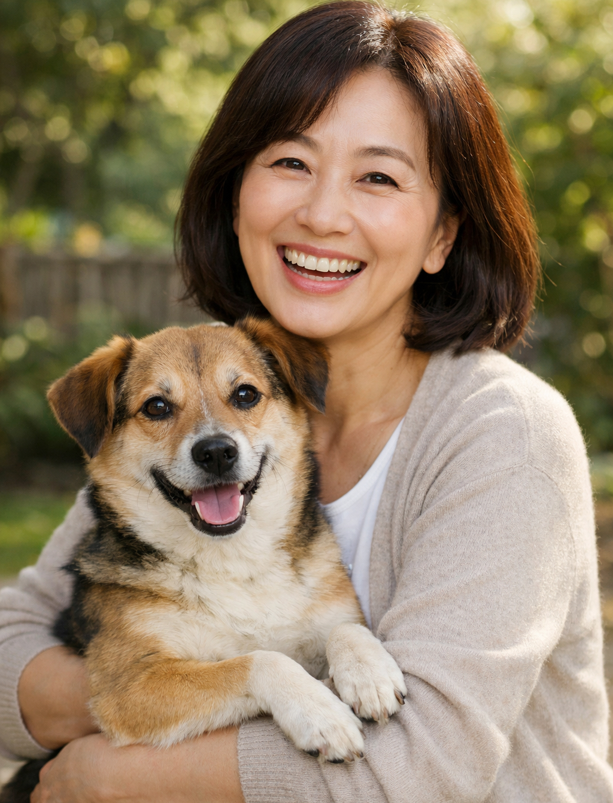

반려지식

인권을 넘어 생명권으로!
2002년 4월 15일, 아름품을 설립하였습니다.
2006년 KARA (Korea Animal Rights Advocates)란 새 이름으로 비영리 시민단체로 등록하고 2010년 3월에는 농림부에 사단법인으로
등록하여 보다 강력하고 효율적인 동물권 활동의 발판을 만들게 되었습니다.
2021년 현재 전 세계는 Covid-19 펜데믹으로 혼란과 격변의 시기를 보내고 있습니다. 세계 곳곳에서 가뭄 홍수 이상기온 대규모 산불 등 인간의 힘으로 대응 불가능한 무서운 기후 변화의 위험에 직면하기도 합니다. 자연이 보내는 경고는 이제 실존적이고 급박한 위험으로 우리 앞에 있습니다. Covid-19도 무서운 기후 변화도 비인간동물에 대한 인간동물들의 몰이해와 부당한 착취와 깊이 연관되어 있습니다. 야생동물과의 관계의 파탄은 무서운 인간전염병으로 돌아왔고 농장동물에 대한 잔인한 착취는 구제역 조류독감은 물론 아프리카 돼지 열병과 같은 동물전염병의 전 지구적 만연을 야기함은 물론 탄소나 메탄가스로 인한 기후변화를 재촉했습니다. 그럼에도 우리 인간 동물들은 여전히 먹고 누리고 소비하며 순간의 향락에 몰두하여 스스로와 미래 세대, 그리고 자연에 끝없이 상환 불가능한 빚을 쌓고 있습니다. 우리나라의 상황은 더욱 심각합니다. 세계적으로도 손꼽힐 밀집 공장식축산과 대규모 살처분, 엽기적인 개·고양이 식용·약용 도살 행위는 물론 세계 유일의 소위 ‘식용 개’ 공장식 사육과 음식쓰레기 급여는 부끄럽기 그지없는 일입니다. 시대착오적 반려동물 취식 행위가 어떤 파국을 불러올지 아무도 예측할 수 없는데 책임 주체인 국가는 뒷짐만 지고 있습니다. 법적 보호기제도 미약하기만 합니다. 우리 헌법은 동물을 산업의 도구로 간주할 뿐, 동물들의 보호를 국가의 의무로 부과하지 않습니다. 민법상 동물은 여전히 ‘물건’에 불과합니다. 동물보호법은 반려동물 도살행위도 방역을 명목으로 한 생매장 살처분도 막아내지 못합니다. 지금은 그 어느 때보다도 동물권 단체의 역할이 중요한 시기입니다. 2022년이면 동물권행동 카라가 동물단체로서 우리 사회에 첫 발을 내디딘 지 20주년이 되는 해입니다. 그간 동물권행동 카라는 전임 임순례 대표님의 헌신적 기여와 이에 발맞춘 활동가들의 연구와 노력에 힘입어 발전과 혁신을 거듭해 왔습니다. ‘아름품’시절 유기동물과 개식용문제에 집중하던 카라는 2014년 마포 더불어숨 센터를 개관하며 본격적인 동물권 인식 증진 캠페인과 길고양이 보호활동, 공장식축산 폐기를 위한 동물권 소송 등으로 활동 영역을 거침없이 확장해 왔습니다. 재개발지역의 외로운 동물들의 곁, 쓰레기와 오물 가득한 애니멀 호딩의 현장, 기업화된 개농장, 비극적인 살처분 현장에 카라가 있었습니다. 반려동물로부터 시작한 동물권 활동은 동심원을 확장하며 그 깊이를 더해 왔습니다. 이제 더봄센터를 활동의 장으로 대규모 번식장과 경매장과의 본격적인 싸움을 진행하겠습니다. 다른 한편 더불어숨 센터에서의 다양하고 근본적인 동물권 정책 및 교육 활동 동물권 영화제 등의 적극적 전개로 모든 동물 학대 없는 세상으로 더 힘차게 나아가려 합니다. 2002년 창립 당시 대한민국의 작고 힘없는 동물단체에서 이제 명실공히 비인간동물과 인간동물의 바람직한 공존의 표준을 제시하는 철학과 신념으로 무장된 단체, 기후 변화를 야기하는 공장식축산 철폐와 농장동물 해방을 위한 사회 담론을 이끌어 내는 실질적인 힘을 갖춘 단체로 커나가는데 작은 밑거름이나마 될 수 있도록 진심을 다해 노력하겠습니다. 눈을 크게 뜨고 꿈꾸겠습니다. 동물학대 없는 세상을 향한 우리의 꿈은 동물들을 위해 기꺼이 연대해 주신 1만 2000분 후원자님들의 따뜻하고 강한 연대에 힘입어 반드시 현실화될 것입니다.